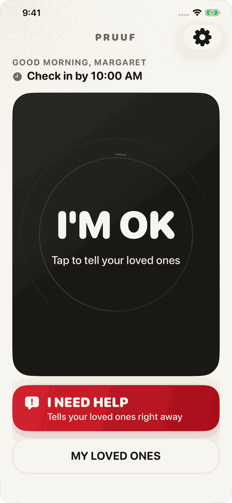
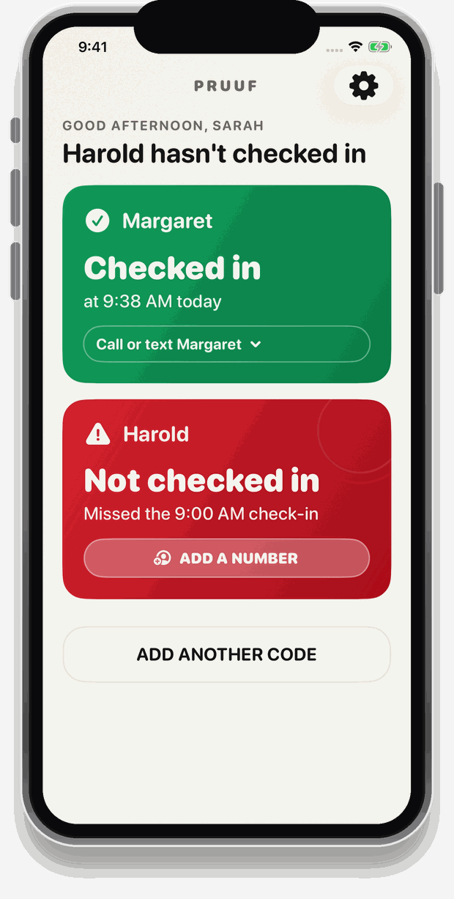
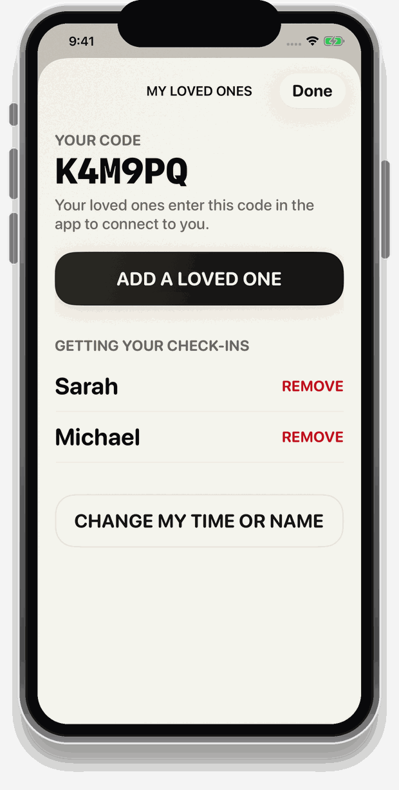
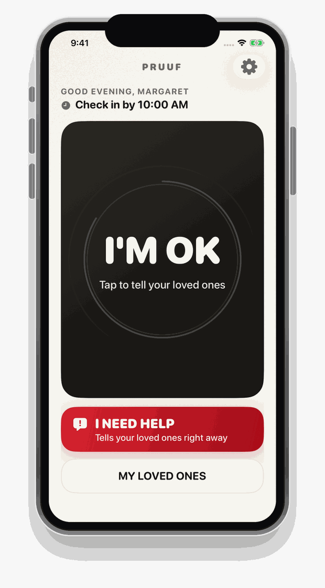
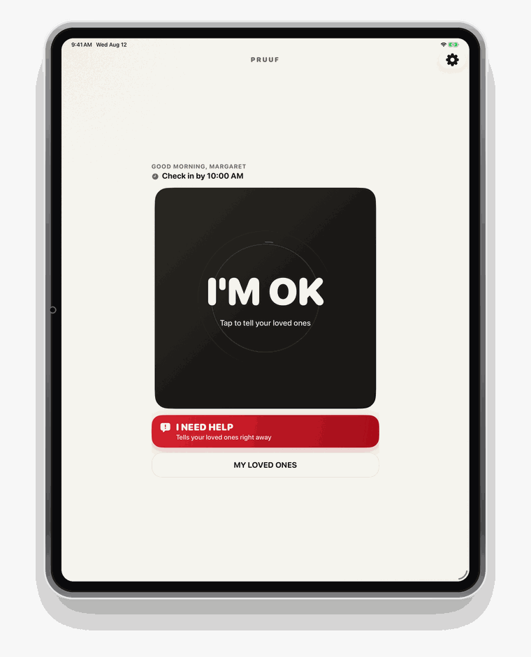
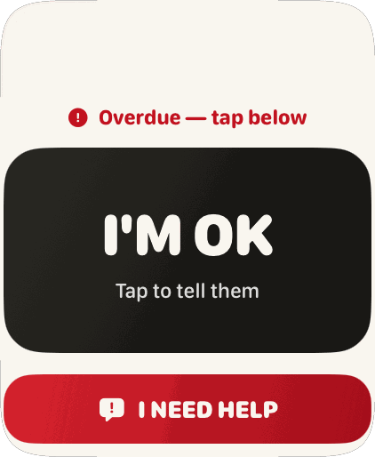

Peace of mind, one tap a day
One tap.
And everyone
stops worrying.
Pruuf sends one message to the people who love you — I’m OK today. And on the morning it doesn’t come, it tells them that too.
Free forever for the person checking in. 15-day free trial for the family.
Live — tap it and see
Her daughter’s phone
Why this exists
The danger was never
the fall itself.
Every family with someone living alone runs the same quiet system. Somebody calls each morning. If there’s no answer they call again. Then they call the neighbour. Then they get in the car.
It works, right up until the morning somebody is in a meeting.
Pruuf started with one woman in her own house, who was fine, and a daughter three states away who called every morning at nine — not because there was anything to say, but because the silence was unbearable.
A daily check-in doesn’t stop anything from happening. It means nobody is alone with it for three days.
Two people, one app
Which one are you?
Pruuf asks this on the very first screen, and then never asks you to think about the other side again.
It asks one thing of you, once a day.
- No account. No password. No username to remember.
- One button, big enough to hit without your glasses.
- A reminder half an hour before your time, so it’s hard to forget.
- Check in as often as you like. Once is enough, but the button never locks — tap it again after lunch or before bed and they’ll be told again. The screen tells you the time you’re due, and says so plainly once it has passed.
- Nothing else on the screen to press by mistake.
- You choose whether to share where you are. Pruuf can show your family where you were when you tapped — so if you ever press I NEED HELP, they know where to come. It looks once, at that moment, and never follows you around. Say no and nothing changes about anything else.
- iPhone, iPad and Apple Watch — check in from whichever is nearest, and add as many of your own devices as you own. One account covers all of them.
- As many people as you want. Children, neighbours, the whole family — there is no limit and it does not cost you a penny more, because it never costs you anything.
- Free forever. Not a trial, not a first year. The person checking in is never charged.

You’ll know before you’d have thought to ask.
- A notification the moment they check in.
- An urgent alert if their time passes and they haven’t.
- An urgent alert the second they press I NEED HELP.
- Call or text them straight from the alert.
- “I’ve got this” — so three siblings don’t all ring at once.
- And “this needs more help” — the one button that calls the rest of the family in, for when you get there and it’s worse than anyone thought.
- See where they were, on a real map, if they chose to share it — so nobody is driving around looking.
- One payment, however many people you follow. Your mother, your father, an aunt, a neighbour — adding another never changes the price.

How it works
Four steps, then never again.
Setting Pruuf up takes about three minutes, once. After that it is a single tap a day, forever.
Choose the time
Pick the time you’ll have tapped by — say 10:00 in the morning. That is the whole of the promise.
Add your people
Pick them out of your contacts. Pruuf writes the invitation text for you and gives you a six-character code.
They type the code
They install Pruuf and enter those six characters. Connected. No accounts on either side, so nothing to lock anyone out.
Tap once a day
Everyone gets told you’re fine. That’s the entire routine, and it takes about a second — tap again later if you want to, as often as you like.

The six characters
There is no password, because there is no account.
This is the single decision that makes Pruuf usable by an 82-year-old. There is nothing to sign up for, nothing to verify, nothing to reset at eleven o’clock at night.
It is also the reason the most commonly breached thing in software isn’t here. Almost every breach you read about is a password breach — Pruuf never created that database. No accounts, no usernames, no passwords, nothing to leak, phish or reuse against you somewhere else.
The part that matters
The alert doesn’t
come from her phone.
Almost everything that calls itself a check-in app is a reminder running on the phone of the person being checked on. Which means a dead battery, a phone left charging in the bedroom, or a phone at the bottom of a handbag all look exactly like a phone that simply had nothing to say.
Pruuf’s alerts run on our servers. At her check-in time the server looks for a tap. If there isn’t one, everyone connected to her is told — whether her phone is on, off, flat, or lost down the side of a chair.
The same is true of the help button. Press I NEED HELP and your family is told that second — no countdown, no confirmation step, nothing to reach for afterwards. Somebody who has fallen cannot be asked to confirm anything, so we do not ask.
Pruuf notifies the family members you have added, and nobody else. That is the whole of what it does. We say so here rather than in a footnote, because it is the kind of thing you should find out now and not later.
iPhone · iPad · Apple Watch
Whichever one is nearest.
Full Apple Watch and iPad apps, not shrunken copies of the phone one — and you can connect as many of your own devices as you like, at no extra cost. Tap from the watch on your wrist without going to find the phone, which on the days it matters most is the difference between checking in and meaning to.



Plainly
What Pruuf
doesn’t do.
A product for frightened families could sell almost anything. This is the list we hold ourselves to.
- No location tracking. Pruuf can record where somebody was at the moment they tapped, if they chose to share it — and nothing in between. There is no background location, no history of where anybody goes, and no way to ask the app where somebody is right now. It is off in two taps and deleted after 30 days.
- No cameras, microphones or health data.
- No feed, streaks, badges or scores. Missing a day is not a failure to be shamed for. It is a signal to act on.
- No selling of data, and no advertising or analytics trackers of any kind in the app.
- No account to break into, because there are no passwords at all.
- No dispatching. Pruuf tells the family you added, and that is where it stops.
Built properly
A check-in only
she could have made.
Not “bank-level security”. Here is what it actually is.
Signed on her device
Every check-in is signed with a key created inside the Secure Enclave — the security chip in her iPhone, iPad or Watch. It can’t be exported, copied to another phone, or pulled out of a backup.
So a check-in can’t be faked by anybody not holding her unlocked device — including us. We could write a row in our own database. We couldn’t sign it.
No password to steal
Almost every breach you read about is a password breach. Pruuf never created that database — no accounts, no usernames, no passwords, and nothing to phish or reuse against you elsewhere.
We did it so nobody would be locked out at eleven at night. Removing the most-breached thing in software came free.
The database refuses
One family’s data isn’t kept separate because our code remembers to check. It’s kept separate by row-level security inside the database itself, which declines to return it.
Checks written per-feature are the ones forgotten in the feature written at midnight. This one isn’t written per feature.
Everything is encrypted in transit with TLS and encrypted at rest on disk — which is the ordinary standard, not a headline, and we would rather say so than dress it up. We don’t claim end-to-end encryption, and we’ll tell you why: it would mean our servers can’t read her check-ins — and a server that can’t read them can’t notice one is missing. That noticing is the entire product. There is no AI here either, and no algorithm deciding whether somebody is in trouble: a person taps a button, or they don’t. The full detail, in plain English →
One price
Everyone you love,
on one subscription.
Not one parent. Everyone. Mum, Dad, your aunt, the neighbour who has nobody else — add as many people as you look out for and the price never moves. Adding the fourth person costs exactly what adding the first one did, which is nothing.
It works from your side
You subscribe, and then you invite them. Pruuf writes the message and gives you a six-character code; they install the app, type it in, and they are connected. They are never charged and never shown a price — there is no payment screen anywhere in their copy of the app, so nobody has to talk a parent through a card number.
One subscription. Every person you look after.
And it works from theirs
The person checking in has their own code, and they can give it to whoever they like. One tap tells all of them at once — a daughter three states away, a son who worries, the brother who rings every Sunday. They tap once; everybody exhales.
One tap. However many people care.
That is the whole shape of it: one tap out, one payment in, and as many people on either end as a family happens to have. Nobody is asked to choose which parent to protect, and nobody is asked to choose which child gets told.
Pricing
The person checking in never pays.
Charging an 80-year-old for the button that tells her family she’s alive is not a business we want to be in. Sending is free, for unlimited people, forever. The family who wants the alerts pays once — for everyone they look after, however many that turns out to be.
For the person checking in
$0
Forever. Not a trial.
- The I’M OK button
- The I NEED HELP button
- Your own reminder before your time
- iPhone, iPad and Apple Watch — as many of your own devices as you want, on one account
- Unlimited people receiving your check-ins — add five children and three neighbours if you like; the price is still nothing
Sending is always free. There is no tier, no cap and no upgrade that changes that — the person whose safety this is never has to pay for it, and never has to ask anybody to.
Pruuf for Family
$49.99 per year
That’s $4.17 a month, billed once — 16% less than paying monthly.
- Alerts when a check-in is missed
- Alerts when someone asks for help
- Call, text and “I’ve got this” from the alert
- “This needs more help” when one person isn’t enough
- Where they were, on a map, when they’ve chosen to share it
- Everyone you look after, on one subscription — two parents and an aunt cost the same as one; there is no per-person charge, ever
- Close an alert for everyone once you’ve spoken to them
- One price, and it stays yours — if we put it up later, you are not moved
- 15 days free. Cancel any time in Settings.
Billed by Apple through the App Store. The price you sign up at is the price you keep — if it goes up later, you are not moved. How our pricing promise works.
Questions
The things people ask first.
What if they forget to tap it?
Then their family is told — which is the entire point. Pruuf does not try to work out whether a missed day is forgetfulness or something worse, because from the outside those look identical and only one of them is safe to assume.
In practice, forgetting is rare: a reminder arrives on their own phone 30 minutes before their time, and the routine settles in within about a week. Families usually agree on a check-in time slightly later than the real one, so an ordinary lie-in doesn’t start anything.
Can she check in more than once a day?
Yes, as many times as she wants. One tap satisfies the day, but the button never locks — plenty of people like to say so again after lunch or before bed, and everyone connected is told each time.
The screen tells her when she is due — “Check in by 10:00 AM” — and once she has checked in it switches to when the next one is due. There is deliberately no ticking countdown before her time: a clock counting down on the screen of somebody who may already feel like a burden turns a gentle promise into pressure, all morning. Once the time has passed, the number stops being pressure and starts being useful, so it appears then — “Overdue · 15m late”.
Does it show me where they are?
Only if they said yes, and only at the moment they tapped.
Pruuf is not a tracker and will never be one. That distinction is the whole design. A tracker answers “where is she right now”, which means watching somebody all day. Pruuf answers “where was she when she asked for help”, which means looking exactly once, when she pressed a button herself.
The person checking in is asked during setup, before they have an account, and they can choose to share it every time they check in, only if they press I NEED HELP, or never. It is one switch in Settings and it takes two taps to change. If they say no, everything else about Pruuf works exactly as it did.
When there is a location to show, their card says so and one tap opens a real map with streets and buildings, the time it was taken, and how exact it is. When there isn’t, the card says which of those three reasons it is — so “we haven’t got one” can never be mistaken for “they refused”.
Locations are deleted after 30 days. Only the people they have added can ever see one.
Is my mother going to be able to use this?
That is the question the whole app is designed around. There is no account, no password and no username. Her screen has one enormous button on it and almost nothing else. The text scales all the way up if she has already turned text size up on her phone.
Setup is the only part that takes a moment, and it is normally done by whoever is reading this, sitting next to her, once.
What happens if her phone is dead or lost?
The alert still fires. Pruuf’s missed-check-in alerts run on our servers rather than on her phone, so a flat battery, a phone in another room, or a phone that has been left in a taxi all produce the same result: her time passes, no tap arrives, and you are told.
Does it work on Apple Watch and iPad?
Yes — both, as proper apps rather than stretched versions of the iPhone one. The watch has its own check-in button and its own complication, so the day’s check-in can be a glance and a tap without going to find a phone at all. The iPad lays out for the bigger screen rather than blowing the phone layout up.
Connect as many of your own devices as you like. One account covers all of them, they stay in step automatically, and alerts arrive on every one — so it does not matter which is nearest when something happens. Adding devices never costs anything, on either side.
Can more than one of us get the alerts?
Yes — as many as she likes, with no limit and no cost to her. Every one of them is alerted. Whoever acts first can press “I’ve got this”, which tells the others to stand down so she doesn’t get four phone calls in ninety seconds.
Only one of you needs to subscribe for her to be covered, and adding more people to her list never changes what anybody pays.
Can I follow both of my parents?
Yes, and there is no limit. You pay once. One subscription covers everyone you look after — two parents, an aunt, a neighbour, however many that becomes — and adding another person never changes what you pay.
You’ll see each of them on one screen with the time they checked in, and you’re alerted about any of them who misses their time.
Who gets told when something is wrong?
The family members who have been added, and nobody else. Pruuf notifies people — that is the whole of what it does, and we would rather be clear about it than sell you something on a misunderstanding.
What a situation needs, and who else should be involved, is a judgement for the people who are actually there. Pruuf's job is to make sure they know.
What do you store about us?
A first name, a check-in time, which people are connected to which, and the times check-ins happened. That is close to all of it. There are no passwords because there are no accounts, there is no location data, and there are no advertising or analytics trackers in the app.
You can delete your account and everything in it from inside the app at any time. The full policy is written in the same plain language as this page.
I run a care agency. Can I use this for our clients?
Yes — there is a version of Pruuf built for organisations, with a dashboard showing every client’s status, alerts routed to your on-call coordinator as well as to the family, and a timestamped record of who was told and when.
For care providers
Responsible for a hundred people, not one?
Home care agencies, senior living operators and care networks use Pruuf to put eyes on every client every day — without a single extra visit — and to hold a record of exactly who was told and when.
See Pruuf for care providersNearly there
Be told the day it’s out.
Pruuf is in final review with Apple. Leave your email and you’ll get one message — a link to the app on the day it goes live. Nothing else, ever, and it’s one click to be gone.
You’re on the list.
We’ll email you once, on the day Pruuf is available, and that will be the only time you hear from us. Thank you for being early.